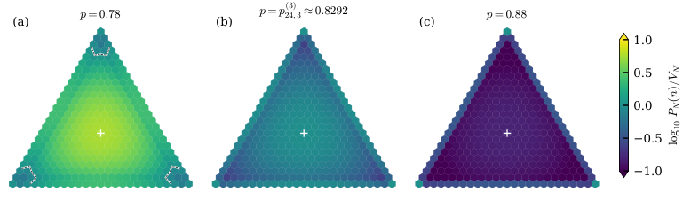

Many exact identities and finite bounds (exact law, balancing, ordering of constants a_k, vertex bracket) were formalized in Lean 4, with a statement-to-theorem map; asymptotics were not formalized.
Abstract
A Markov chain with exit rates $q_i$ runs for $N$ steps with transition matrix $I+(T/N)Q$. On each irreducible face that carries start mass, we prove a local limit theorem for the occupation counts with an explicit constant and relative error $O(1/T)$, uniformly for $1\le T\le\varepsilon N$ with $\varepsilon\max_iq_i<1$ and on compact subsets of the open face. Up to $O(1)$, minus the log-probability of counts $n$ with support $F$ is $|F|-1$ times $\log(N/\sqrt T)$ plus $N$ times the Donsker and Varadhan functional of $I+(T/N)Q$ at $n/N$. Every admissible face has an explicit power of $T$ in its largest probability for large $T\le N^{1/3}$, and a constant given by a finite-dimensional variational formula. For $T=τ\log N$ the face of the mode minimizes $τλ_F+|F|-1$ at first order, with $λ_F$ the exit rate. If an admissible face has $Δ\ge1$ more states than another and an exit rate smaller by $δ>0$, we locate every crossing of their largest probabilities for large $T\le N^{1/3}$ up to $O(1/\log N)$. For two irreducible faces the crossing is unique for large $N$ in $1\le T\le\varepsilon N$, with coefficient $1/2$ of $\log\log N$. Near a facet, the continuous-time occupation density is the facet density times an explicit kernel, with relative error $O(1/T)$ at times $x\le cT$ off the facet, $c$ small. The counts obey a lattice form with extra error $T^2/N$ for $T\le\varepsilon_1\sqrt N$. The kernel is Bessel for $x=o(T)$ at facet profiles where the removed state has equal entry and exit laws, and at a profile where the rate has a first correction, of order $m\ge3$, if and only if $x=o(T^{1-2/m})$. On the complete graph with the uniform start, each face of at least 2 states crosses a vertex exactly once.
Problem
The paper studies occupation counts of a rarely switching Markov chain, motivated by Kagey's Problem 131 on a persistent Galton board with d directions. The question is which face of the simplex of bins (vertex, edge middle, or full center) becomes most likely as the switching rate grows.
Approach
The occupation law is written exactly in run, refresh and ratio forms via a generating function. Uniform Bessel-type approximations and local limit theorems give second-order asymptotics that break the first-order tie between faces. The analysis also covers general starts, weak Potts-field tilts and the behaviour near the simplex boundary. Exact identities and finite bounds are formalized in Lean 4, and other claims are checked numerically with Python scripts.
Results
Every face ties with the vertices at first order, when T is about log N. At second order the full center wins: for large N the mode jumps once, from the vertices straight to the center, with explicit crossing expansions. Many exact statements are machine-checked in Lean 4, while the asymptotic results and the nonuniform-start results are not formalized.

Figure 1: The ratio P_{N}(n)/V_{N} for d=3 and N=24 , one hexagon per bin, on a \log_{10} scale. (a) At p=0.78 only the 21 bins inside the dashed curves near the vertices are below the vertex height. (b) At the full-center crossing p^{(3)}_{24,3}=0.82921\ldots the center (8,8,8) (cross) ties with the vertices and every other bin is below them. (c) At p=0.88 every nonvertex bin is below the vertex